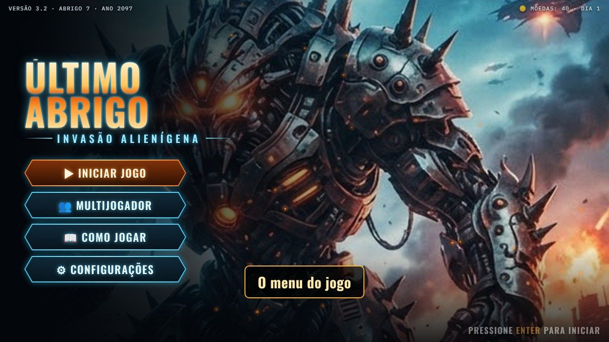
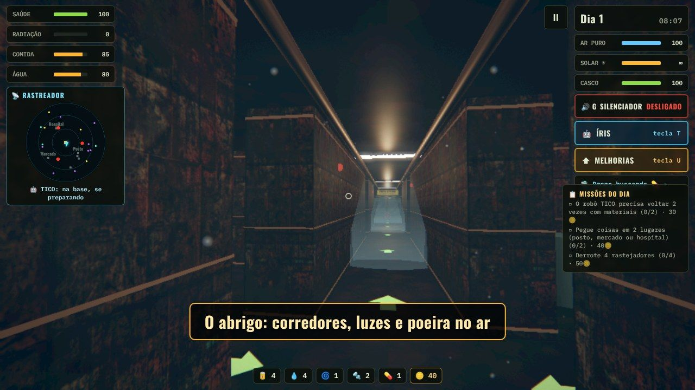
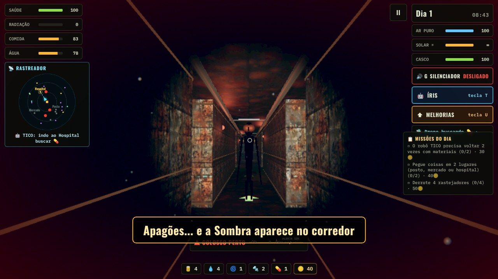
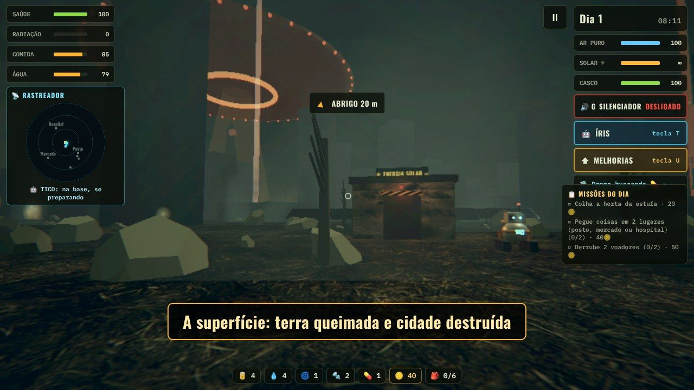

Veja o jogo
Sobre o jogo
Naves alienígenas cobriram o céu e soltaram os colossos, monstros gigantes que caçam tudo o que faz barulho. Você está no Abrigo 7, um bunker subterrâneo enferrujado. Cuide da comida, da água e do ar puro, conserte as rachaduras, saia na superfície radioativa para buscar suprimentos e aguente até o comboio de resgate do dia 10.
Colossos de 50 metros, espreitadores que caçam em bando, rastejadores e voadores. À noite, um espreitador pode entrar pela ventilação!
Apagões, a Sombra no fim do corredor, neblina, relâmpagos, olhos vermelhos na escuridão e o coração batendo quando o perigo chega perto.
Junte moedas para reformar o abrigo e comprar escudo, torres de laser e canhão de plasma. Sala de segurança com 4 câmeras ao vivo.
O robô TICO busca peças sozinho (veja no rastreador) e a ÍRIS, a inteligência do abrigo, fala com você.
Três missões novas por dia, com prêmios em moedas.
Modos de gráfico Celular fraco, PC fraco, Leve, Normal e Ultra, economia de bateria e resolução automática.
Imagens






Como jogar
- No computador: clique em “Jogar agora”. Ande com W A S D, olhe com o mouse, use coisas segurando E, atire com o clique ou ESPAÇO, lanterna no F.
- No celular: jogue no navegador ou baixe o APK. Ande com o controle da esquerda e arraste a tela para olhar.
- Para instalar o APK no Android: baixe o arquivo, abra-o e permita “instalar apps desconhecidos” quando o celular pedir.